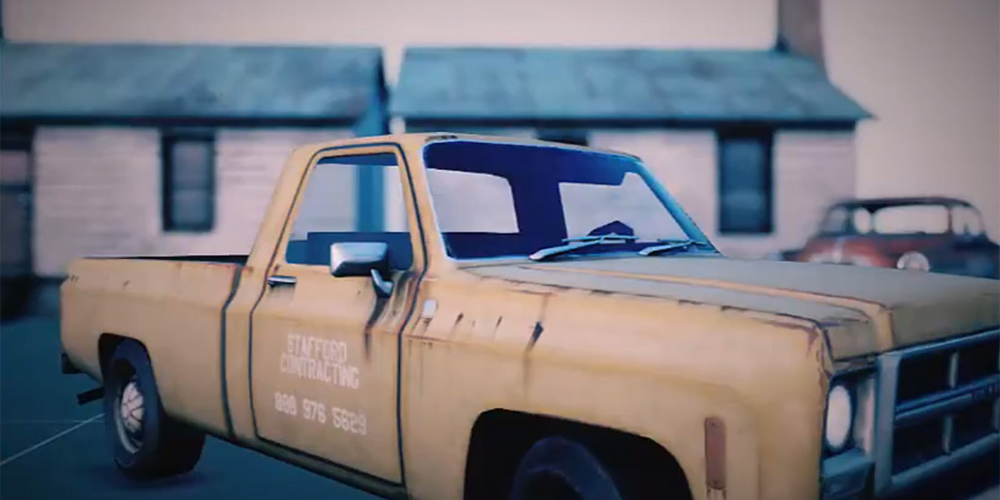

Depth of Field (DoF)

Depth of Field blurs what is out of focus, like a real lens. The camera's FocalDistance sets the distance in focus, and its Aperture sets how quickly the blur grows away from it. Out-of-focus highlights spread into shapes called bokeh, which reproduce the shape of the lens aperture.
Tip
The focus distance and the aperture are camera properties, so each camera can focus differently.
Parameters
| Parameter | Default | Description |
|---|---|---|
| Enabled | Off | Turns the effect on. |
| Debug Mode | Off | Colors the near out-of-focus area red, the area in focus green and the far out-of-focus area blue. |
| Focal Region | 0.3 | Depth of the region around the focus distance that stays sharp. |
| Bokeh Shape | Circle |
Shape of the bokeh: Circle, Pentagon, Hexagon or Heptagon. |
| Bokeh Size | 10 | Size of the bokeh shapes. |
| Bokeh Rotation | 0 | Rotation of the bokeh shapes, in degrees. |
| Near Fade Power | 0.94 | How softly the blurred foreground fades over the sharp area. |